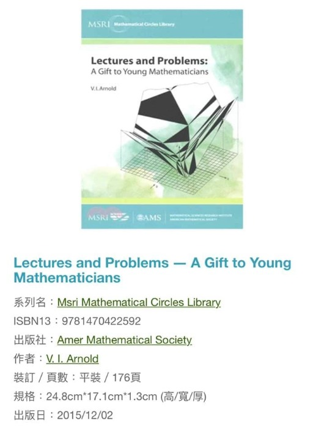

大數學家阿諾德給年輕孩子的禮物
/如果可能 家有稚齡孩子的父母可以在雅馬遜買回此書與孩子一起玩/
感謝家長們對於獵豹的肯定，我們預定開設的中低年級的數學啟蒙課程，在試聽課後的三天內便告額滿，很多家長對未來課程的設計與風格提出許多問題，我以網路截文與他的書籍供家長們參考。
弗拉基米爾·阿諾德（英文Vladimir Igorevich Arnold，1937~2010）是20世紀最偉大的數學家之一，動力系統和古典力學等方面的大師。
阿諾德開創了幾個數學領域，如幾何力學、辛拓撲及拓撲流體動力學。從常微分方程和天體力學到奇異理論和實代數幾何，他都對其基礎和方法做出了奠基性的貢獻。
阿諾德在2001年獲得沃爾夫數學獎，2008年獲得邵逸夫獎。
阿諾德很有獨創性。據說阿諾德極少讀現代人的文章，他主要是讀牛頓、歐拉等大牛人的文獻，從這些比他更牛的人的文章里吸取靈感和養分。阿諾德帶研究生也是這樣的風格，從來不給學生指定課題，只是告訴他們那些是已解決的那些還是未知的。

阿諾德對數學教育也很有見解。他的教科書以及他的學生也對數學界產生了深刻的影響。
一件不很為人所知的是，阿諾德曾被認為是問題兒童，啓發他的天賦的是一位好的老師及其問題。
老師提出的數學問題是：從兩鎮同時出發相向而行的兩位老嫗，在中午相遇，再繼續走向對方小鎮，分別於下午四點和晚上九點到達目的地，問她們是何時起步的？ 當然此題代數求解非常容易，但那時他們還未學到代數。阿諾德用了相似性的理由發明瞭「算術」解，體驗了發現的快樂。
阿諾德認為再次體驗這種快樂的慾望才是他成為數學家的原因。
有一次為了考察一個學生的水平，給學生出了一道題。學生冥思苦想2天終於圓滿解決，然後美滋滋、興衝衝跑來見阿諾德。沒想到得到的是批評：就這問題還需要2天才解決啊，坐公共汽車2站路的時間就應該解決掉！
阿諾德深信，傳統俄羅斯的思維發展訓練最早是通過獨立思考簡單但不容易的問題來培養的。
2004年春，一些在巴黎居住的俄羅斯人請這位大數學家幫助他們的幼齡的孩子進行這樣的訓練。
後來那些教材編成阿諾德的書《數學講義和問題：給年輕數學家的禮物A Gift to Young Mathematicians》
這書是我教書許多年後才看到，很驚訝的是，我之前在小學、國中階段訓練孩子的問題與他風格頗多重疊。
https://www.facebook.com/groups/695697124716309/permalink/863653187920701/